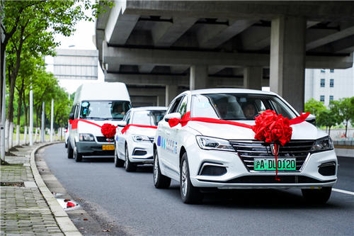
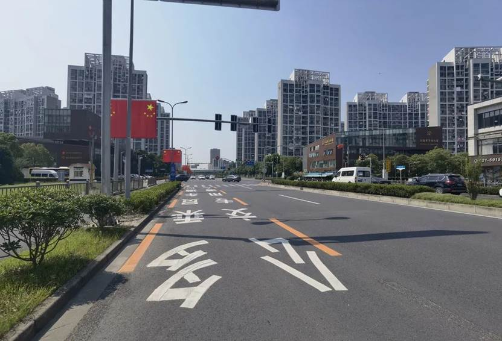

project collections: Smart-Vehicle
Product introduction
Metro operation cost is high, bus travel speed is slow, urban traffic “pain points” how to solve?
The smart train transportation system demonstration line officially opened on Jiading Huyi Highway recently gives a new solution. The solution uses cutting-edge technologies such as intelligent network connection, Big data, and artificial intelligence to “butterfly” traditional urban public transportation resources into a new generation of medium and large-volume urban backbone transportation systems, integrating the flexibility of highway transportation with the advantages of large-volume rail transportation, which will be safer, more comfortable, efficient and environmentally friendly.
Smart trains have been piloted in Jiading
Hai Anjun recently found in Jiading New Town that on the bus-only lane on the Shanghai-Yi Highway, there is a line of words side by side with the “bus-only lane”: “Multi-occupant lane.”
At the same time, the sign directly above the bus lane of Huyi Highway shows that during the two peak periods of 7:00-10:00 and 16:00-19:00, vehicles that can pass on the bus lane, in addition to buses, vehicles with two or more occupants can pass.
The smart train will be tested on the Shanghai-Yi Highway from 9:50-10:50 and 15:00-16:00 using multi-occupant lanes. After the test is completed, the operating time will be adjusted to provide travel services for the public. The smart train transportation system is planned by the Chinese Academy of Engineering, with collaborative innovation by scientific research forces from Tongji University, Tsinghua University, Hunan University and High Tech, and industrial development and application by Dexin Smart Technology (Shanghai) Co., Ltd.
User operation mode
(1) WeChat official account/Mini Program search “smart car train”

(2) Click to book a trip, or open the Smart Train Mini Program and select your city

Smart train ride interface display:

(3) Click Reservation, select the departure site and the end site, and select the corresponding ride time:


(4) After the reservation is successful, your corresponding order will be generated, and you can experience this product according to the order information

(5) During the trip, you can check the confirmed order:

Contact the platform
Share QR code -

**Micro Signal - gh_8e300cd53581 **
Function Introduction Courtesy life, enjoy good travel: share industry information, advocate intensive, green and low-carbon travel concept; smart city travel public transportation system based on the backbone construction of smart train transportation system, expand the network to cover the entire urban travel demand area, provide citizens with safe, comfortable, efficient and environmentally friendly travel services, help solve urban traffic congestion, create a better city travel.